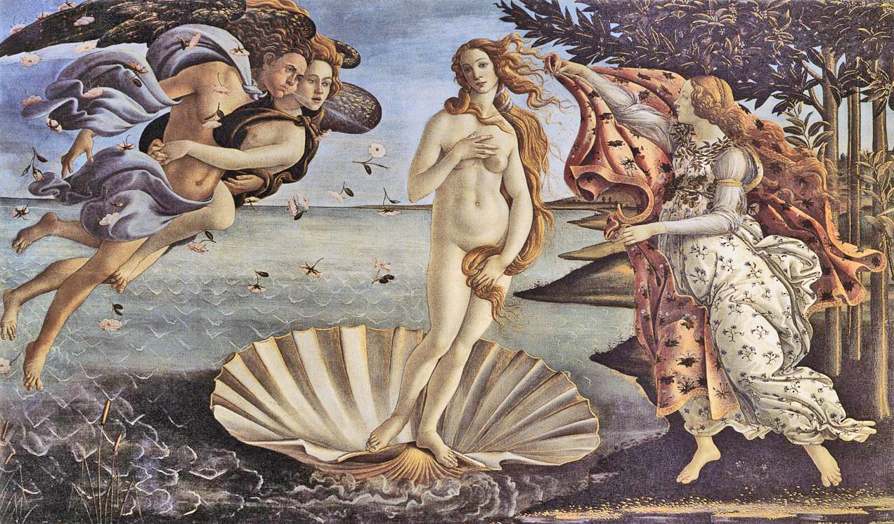

Estética
Conceito Geral:
A estética é o ramo da filosofia que estuda a natureza da beleza, da arte e do gosto, explorando a relação entre arte e sociedade. Este campo investiga como as experiências estéticas influenciam a percepção do mundo e como a arte reflete e molda a cultura. Tem sua origem na palavra grega aisthesis, que significa "apreensão pelos sentidos", "percepção".
É uma forma de conhecer (apreender) o mundo através dos cinco sentidos (visão, audição, paladar, olfato e tato).
Importante saber que o estudo da estética, tal como é concebido hoje, tem sua origem na Grécia antiga. Entretanto, desde sua origem, os seres humanos mostram possuir um cuidado estético em suas produções.
A Beleza entre os Gregos
A filosofia grega, a partir de seu período antropológico, buscou perceber os motivos pelos quais as atividades humanas possuem um comprometimento com um valor estético: a beleza.
Desde o início dos tempos, a ideia de beleza e de bem-fazer estão interligadas à produção e transformação da natureza.
Com isso, o filósofo grego Platão (427-347) buscou relacionar a utilidade com a ideia da beleza. Ele afirmou a existência do "belo em si", uma essência, presente no "mundo das ideias", responsável por tudo o que é belo.
Muitos dos diálogos platônicos têm como discussão o belo, sobretudo O Banquete. Nele, Platão se refere ao belo como uma meta a ser alcançada por todo o tipo de produção.
Entretanto, o filósofo une o belo à sua utilidade e ataca a poesia e o teatro grego. No pensamento platônico, esse tipo de atividade não possuía utilidade e gerava confusão acerca dos deuses e dos objetivos das ações humanas.
Em seu livro A República, Platão deixa claro que na formulação de sua cidade ideal, a poesia grega seria afastada da formação dos homens por desvirtuar os indivíduos.
Em Aristóteles, há a compreensão de arte como técnica destinada à produção. O filósofo busca definir os termos gregos: práxis (ação), poiesis (criação) e techné (regras e procedimentos para se produzir algo).
Sendo assim, passa a ser entendido como arte, tudo o que passa por essas três dimensões, todo o tipo de trabalho e tudo aquilo que produz algo novo.
Entretanto, há uma forte hierarquia entre as artes gregas. As artes da razão, que trabalham com o intelecto, são entendidas como superiores às artes mecânicas, que trabalham com as mãos.